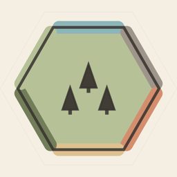

Tideways
A quiet hex tile puzzle
Tideways is a calm hex-tile game for iPhone and iPad. Place tiles where their edges meet, close regions for bonuses, and steer toward your best score — with no timer and no pressure.
Need help or found a bug?
Open a support request and describe what happened — which device, which screen, and what you expected. Screenshots help a lot.
Contact supportFrequently asked questions
How do I rotate a tile?
Long-press anywhere on the board, or tap the rotate button next to the current tile.
Where is my saved voyage?
Tideways saves automatically after every move. Tap Continue voyage on the title screen. Standard, daily and zen each keep their own save, so switching modes never loses progress.
What are trading houses and contracts?
Before a voyage you pick a trading house, which changes how many points each terrain is worth. Each voyage also draws three optional contracts — small objectives that pay a bonus the moment your board meets them.
Why can I only play the daily challenge once?
Everyone gets the same deck, house and contracts each day, so scores are comparable. A new challenge starts at local midnight.
Are there ads?
Tideways is free. There's one small banner on the menu and below the board, and at most one short break ad every 30 minutes — only when you leave a voyage or start the next one, never in the middle of a move. You can also choose to watch a short ad for a few extra undos, skips or tiles, only when you tap a boost button yourself. Turn boosts off under Settings → Reward boosts.
How do I remove the ads?
Tap "Remove ads" below the banner or in Settings → Purchases. It removes banners and break ads with a single one-time purchase, shared with your family. On a new device, use "Restore purchase" in Settings.
Does Tideways support Game Center and reminders?
Yes. If you're signed in to Game Center, voyages and the daily challenge have leaderboards and every milestone is an achievement. Daily reminders are off until you turn them on in Settings.
What are stars, combos and special tiles?
Every scored voyage has three star goals. Closing regions on back-to-back moves builds a combo that raises the region bonus up to ×2. Two rare special tiles turn up in each deck: the Lighthouse doubles the bonus of the region it closes, and the Tidewell's edges match any colour.
What is the weekly challenge?
One deck for everyone for the whole week (Monday to Sunday). Play it as often as you like; your best score counts on the weekly Game Center leaderboard.
Can I change or turn off the music?
Yes. Use the small player on the main menu to skip tracks, or go to Settings → Music to pick a track, change the volume or switch music off. If you are already listening to your own music, Tideways stays quiet.
What is Northern Ice?
A winter event from 15 January to the end of February: a frosty look, a winter track, and ice floes in the daily and weekly decks that make sea regions easier to close.